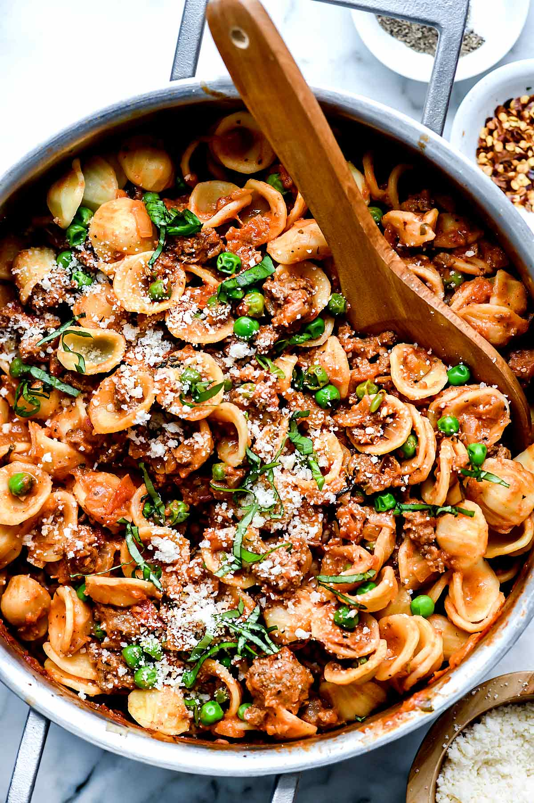

Pasta with Turkey Sausage and Peas

This healthy recipe for pasta with turkey sausage and peas makes a fast Italian skillet dinner for any night of the week.
This recipe will quickly become the one you pull out of your “what’s for dinner tonight” hat. The recipe ingredients are staples you should have on hand or can be quickly picked up at any grocery store.
Ingredients
- 1 pound short dried DeLallo pasta such as orecchiette, penne, or shells
- 2 tablespoons olive oil
- 1 pound ground turkey
- 1 tablespoon fennel seeds
- 1 teaspoon Italian seasoning
- 1 teaspoon kosher salt
- 1 teaspoon freshly ground black pepper
- 1/2 teaspoon red pepper flakes
- 1 medium onion chopped
- 4 cloves garlic pressed or minced
- 1 28- ounce can crushed DeLallo San Marzano tomatoes
- 1/4 cup fresh basil leaves plus more for garnish, thinly sliced
- 1 teaspoon kosher salt
- 1/2 teaspoon freshly ground black pepper
- 1/2 cup half and half
- 2 cups frozen peas
- 1/2 cup grated Parmesan cheese
Steps
- Cook Noodles
Home Page